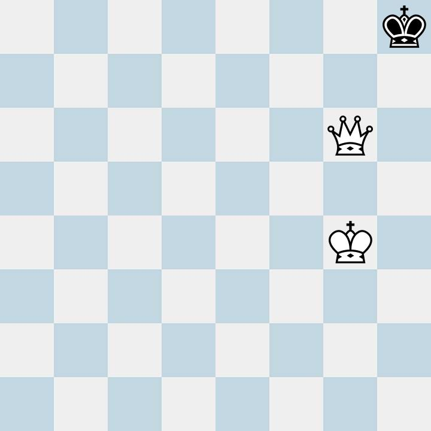

Fase do jogo
Vitória
O objetivo do jogo é capturar o rei ou obter o máximo de vantagem sobre o jogo inteiro, então a vitória é quando o rei está sem saída, podendo ser xeque mate de dama, torre ou bispo.
Empate
Rei Afogado: nesta situação o rei não toma nem xeque, nem mate, simplesmente o adversário deixou o rei sem casa no próximo lance.
Exemplos de Rei afogado :


Xeque Perpétuo
Não há uma regra que defina o xeque perpétuo como empate, no entanto a maioria dos jogadores concordam. Como o próprio nome sugere, o xeque perpétuo ocorre quando um jogador realiza uma série de xeques sem que seja possível dar um mate. Pelas regras oficiais, esse movimento resultará em empate pela Regra das três posições ou pela regra dos 50 movimentos.